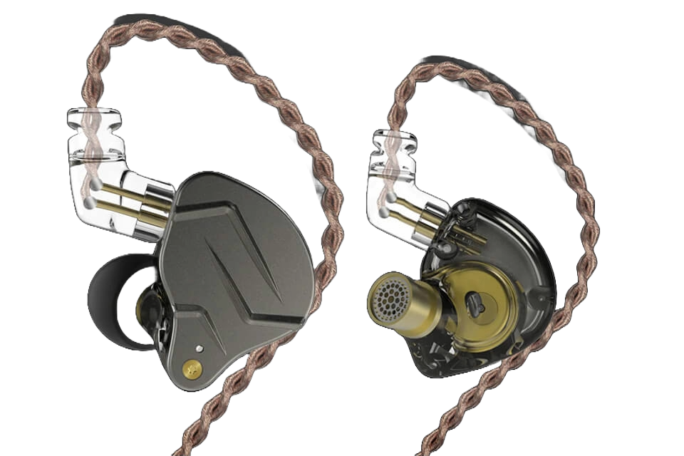
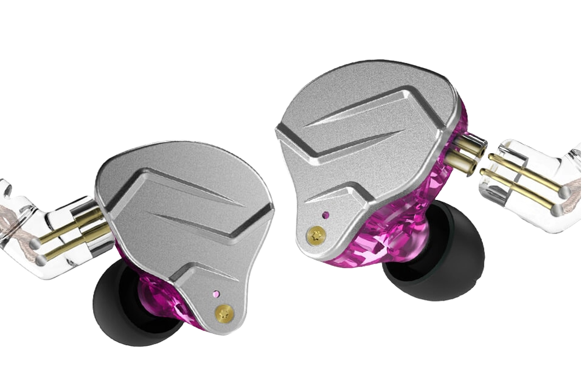
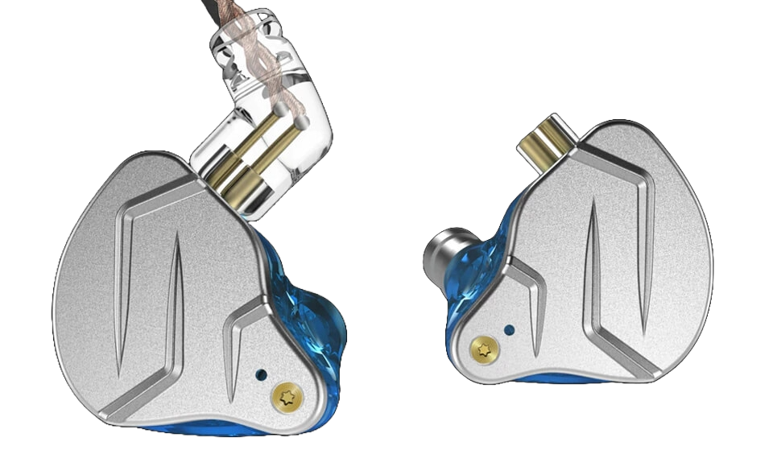

Earphones
KZ ZSN pro
The KZ ZSN Pro in-ear monitors are budget-friendly yet feature-packed earphones designed for audio enthusiasts on a budget. With a hybrid driver configuration and a sleek, ergonomic design, the ZSN Pro aims to deliver impressive sound quality without breaking the bank.
Color